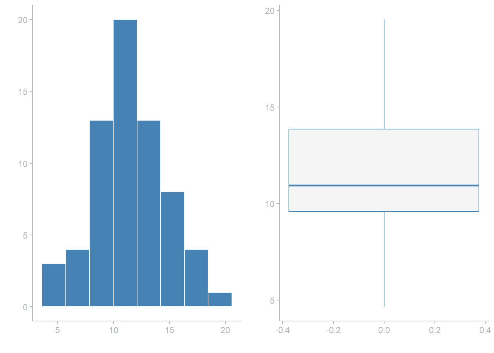
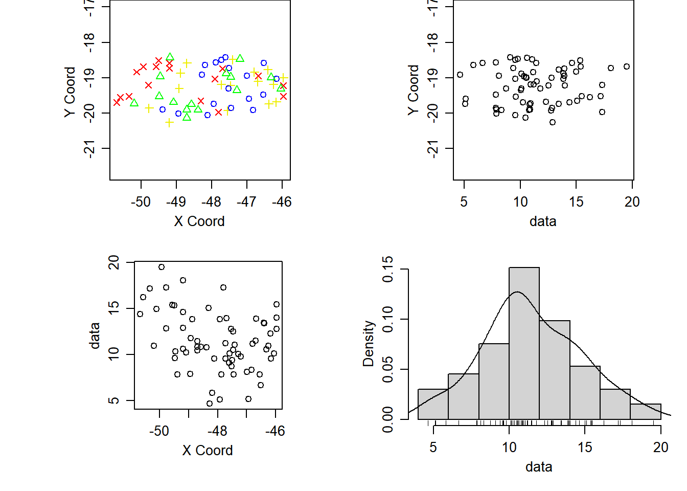
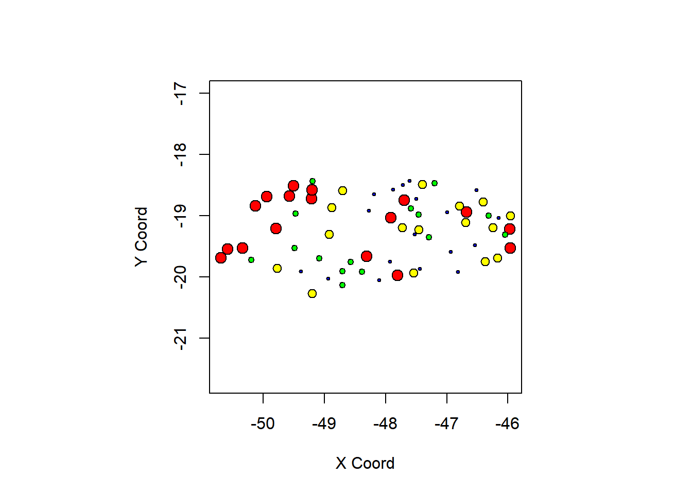
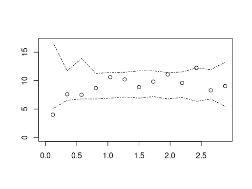
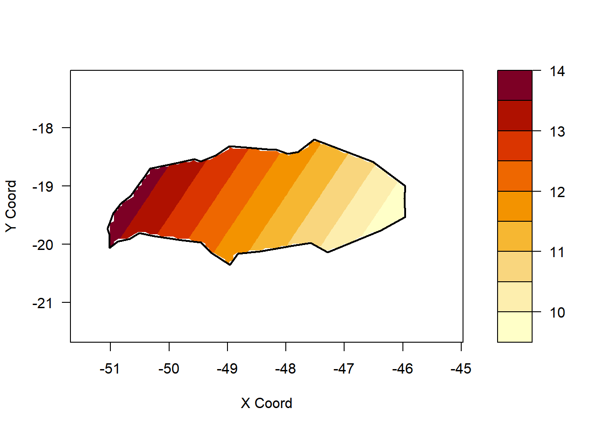

| municipio | X2000 | X2010 | long | latit |
|---|---|---|---|---|
| Uberlândia | 7.04 | 4.65 | -48.1638 | -18.5507 |
| Umburatiba | 39.01 | 33.18 | -40.3422 | -17.1521 |
| Unaí | 16.94 | 10.92 | -46.5422 | -16.2127 |
| União de Minas | 22.49 | 17.19 | -50.2009 | -19.3149 |
| Uruana de Minas | 25.86 | 22.85 | -46.1515 | -16.0351 |
Analfabetismo em Minas Gerais
r
geoestatística
trabalho final da matéria optativa de geoestatística
1. Introdução
O analfabetismo no Brasil é um desafio histórico e persistente. Apesar de avanços significativos nos últimos anos, o país ainda enfrenta altas taxas de pessoas não alfabetizadas, isso reflete a má formação educacional e as desigualdades sociais.
A desigualdade de oportunidades educacional durante a infância do indivíduo é refletida na vida adulta quando enfrenta-se diferenças de produtividade e acarreta em salários baixos no mercado de trabalho. A literatura educacional tem enfatizado a importância de ambientes escolares que promovam tanto a alfabetização quanto o letramento, incentivando o uso da leitura e da escrita para além da simples decodificação de textos.
Em Minas Gerais, a Secretaria de Estado de Educação (SEE/MG) implementa políticas públicas para enfrentar o analfabetismo, como a criação do Programa de Avaliação da Alfabetização (Proalfa) em 2005 e, em 2008, o Programa de Intervenção Pedagógica (PIP). O objetivo do PIP é melhorar a aprendizagem dos alunos e reduzir a repetência, com a meta de que toda criança saiba ler e escrever até os oito anos de idade. Um estudo de Faria e Chein (2016) avaliou o efeito do PIP e de outras intervenções educacionais em Minas Gerais, utilizando dados do Prova Brasil e do Censo Escolar. Os resultados desse estudo indicam que o programa conseguiu elevar a proficiência dos alunos em matemática e língua portuguesa, principalmente entre 2007 e 2009. A pesquisa aponta que políticas de avaliação externa podem ser usadas para incentivar a melhoria do desempenho dos alunos.
O presente trabalho visa analisar a taxa analfabetismo em 2012 da população mineira com idade superior a 25 anos utilizando técnicas geoestatísticas a fim de contribuir para a compreensão da distribuição espacial desta problemática no estado de Minas Gerais.
2. Metodologia
2.1. Material do estudo
Os dados sobre utilizados para realizar este estudo foram extraídos do Índice Mineiro de Responsabilidade Social (IMRS) e abrangem todos os 853 municípios mineiros. O conjunto apresenta informações sobre a taxa de analfabetismo da população com 25 anos ou mais nos municípios do estado de Minas Gerais, nos anos de 2000 e 2010.
O intuito deste trabalho é realizar um estudo sobre as taxas de analfabetismo entre pessoas com mais de 25 anos no estado de Minas Gerais mais recentes obtidas pelo IMRS. Portanto, será utlizado somente a variável referente ao ano de 2010.
2.2. Métodos utilizados
Inicialmente, as análises feitas foram utilizadas as taxas de analfabetismo de todos os 853 municípios do estado de Minas Gerais. Nessa análise inicial, foi notável a grande variabilidade dos dados e a presença de altos valores discrepantes. A dispersão dos dados varia de taxas entre algo próximo a 0% à taxas superiores a 40%, a maioria das cidades mineiras apresentam uma taxa entre 10% à 20% de adultos analfabetos.
Os dados também não apresentaram uma distribuição normal aparente, o que é um pressuposto importante para a aplicação de técnicas geoestatísticas. Portanto, foi necessário realizar uma transformação logarítmica nos dados para tentar normalizá-los.
Após a realização dessas primeiras análises exploratórias deu-se início a análise exploratória geoespacial. Nela notou-se a existência de duas populações distitas as regiões do Norte de Minas, Vale do Jequitinhonha, Vale do Mucuri e Vale do Rio doce apresentaram taxas altíssimas em relação ao restante do estado, isso culminou em uma tendência espacial muito forte, o que atrapalhou o estudo. Por esse motivo, optou-se por realizar a análise apenas para as cidades do Triângulo Mineiro e do Alto Paranaíba. Mas analisar os dados dessas regiões que mostraram altas taxas é de extrema importância para entender por que elas diferem do restante do estado.
Com as observações reduzidas, realizou-se novamente a análise exploratória dos dados. A região do Triângulo Mineiro e Alto Paranaíba apresentou variabilidade moderada dos dados e mostrou ter uma distribuição mais próxima da normal, isso comprovou-se ao testar a normalidade dos dados através do teste de Shapiro-Wilk.
Quando realizada a análise exploratória geoespacial, apesar de mais fraca do que anteriormente ainda foi possível notar a presença de uma tendência espacial, onde as cidades mais ao oeste apresentavam maiores taxas de analfabetismo. O semivariograma experimental também indicou a presença de dependência espacial.
Vários modelos foram ajustados ao semivariograma experimental, entre eles o modelo exponencial, modelo esférico e gaussiano. O modelo que melhor se ajustou aos dados foi o modelo gaussiano, com alcance de 0.55 e patamar de 6.28.
Na krigagem, o modelo gaussiano foi utilizado para prever as taxas de analfabetismo na região do Triângulo Mineiro e Alto Paranaíba. O mapa de previsão resultante mostrou a distribuição espacial das taxas de analfabetismo na região, com áreas de maior e menor prevalência claramente delineadas.
3. Resultados
O conjunto contendo apenas as cidades do Triângulo Mineiro e Alto Paranaíba totaliza 66 observações que apresentaram as seguintes medidas descritivas:
| X2010 | |
|---|---|
| nobs | 66.000000 |
| NAs | 0.000000 |
| Minimum | 4.650000 |
| Maximum | 19.520000 |
| 1. Quartile | 9.580000 |
| 3. Quartile | 13.857500 |
| Mean | 11.480152 |
| Median | 10.945000 |
| Sum | 757.690000 |
| SE Mean | 0.399960 |
| LCL Mean | 10.681377 |
| UCL Mean | 12.278926 |
| Variance | 10.557866 |
| Stdev | 3.249287 |
| Skewness | 0.178172 |
| Kurtosis | -0.328613 |
A menor taxa de analfabetismo registrada na região foi de 4.65%, enquanto a maior taxa foi de 19.52%. A média das taxas de analfabetismo na região é de aproximadamente 11,48%, com uma mediana de 10,945%. O desvio padrão de 3.24 indica uma há dispersão moderada dos dados em torno da média. Também é possível observar que existe uma leve assimetria.

Analisando o histograma e o boxplot, é possível observar que os dados apresentam uma distribuição aproximadamente normal, com uma leve assimetria positiva. Isso se comprova ao utilizar o teste de Shapiro-Wilk, que não rejeita a hipótese nula de normalidade dos dados (p-valor = 0.6471546 ). Também não há presença de valores extremos ou outliers significativos, o que sugere que os dados são relativamente homogêneos. Portanto, não há necessidade de realizar transformações nos dados.
Uma última análise exploratória foi realizada, com os dados em forma geoespacial é possível entender melhor a distribuição espacial das taxas de analfabetismo na região do Triângulo Mineiro e Alto Paranaíba.


É possível observar que as cidades localizadas mais ao oeste da região do Triângulo Mineiro e Alto Paranaíba apresentam taxas de analfabetismo mais elevadas, enquanto as cidades situadas mais ao leste apresentam taxas mais baixas. Essa tendência espacial sugere que fatores geográficos, socioeconômicos ou culturais podem estar influenciando a distribuição das taxas de analfabetismo na região.
Com as análises devidamente concluídas, o próximo passo foi identificar a presença de dependência espacial nas taxas de analfabetismo. Para isso, foi calculado o semivariograma experimental e ajustado o envelope de Monte Carlo.

O semivariograma experimental obtido, juntamente com o envelope, mostra que há fraca dependência espacial nas taxas de analfabetismo na região do Triângulo Mineiro e Alto Paranaíba. Isso indica que as taxas de uma cidade podem estar relacionadas às taxas em cidades vizinhas, o que é um aspecto importante a ser considerado em estudos futuros sobre o tema.
Para modelar a dependência espacial observada no semivariograma experimental, foram ajustados vários modelos teóricos, incluindo o modelo exponencial, esférico e gaussiano. O modelo que melhor se ajustou aos dados foi o modelo gaussiano, com alcance de 0.55 e patamar de 6.28.

Após a realização do ajuste do modelo, foi feita a validação cruzada para avaliar o desempenho de cada um. O modelo gaussiano apresentou o melhor desempenho, com menor erro padrão médio e variância do erro padrão e bem ajustado ao envelope (Figura 6). Portanto, foi escolhido para ser utilizado na krigagem.

O mapa de previsão resultante mostrou a distribuição espacial das taxas de analfabetismo na região, com áreas de maior e menor prevalência claramente delineadas. Ao observá-lo, é possível identificar que as taxas de analfabetismo são mais elevadas nas áreas mais ao oeste da região do Triângulo Mineiro e Alto Paranaíba.

4. Conclusão
A análise geoestatística das taxas de analfabetismo no Triângulo Mineiro e Alto Paranaíba revelou padrões espaciais significativos e dependência entre as cidades vizinhas. Utilizando o semivariograma, foi possível identificar essa dependência, com o modelo gaussiano sendo o mais adequado para o ajuste dos dados. A krigagem, que se baseou nesse modelo, produziu um mapa de previsão que delineou claramente as áreas de maior e menor prevalência de analfabetismo na região.
Esses resultados demonstram que as taxas de analfabetismo não estão distribuídas aleatoriamente e que fatores geográficos, socioeconômicos ou culturais locais podem estar influenciando sua distribuição. A abordagem geoestatística mostrou-se uma ferramenta eficaz para compreender essa problemática, sugerindo que políticas públicas de combate ao analfabetismo devem ser regionalizadas e direcionadas às áreas com maior necessidade. Pesquisas futuras podem aprofundar essa análise, expandindo o estudo para outras regiões do estado e incorporando mais variáveis para uma compreensão mais completa dos fatores que contribuem para o problema.
Referências
Faria, Victor Nascimento, e Flávia Chein. 2016. «Alfabetização e desempenho escolar: uma análise de intervenções recentes em Minas Gerais». Planejamento e Polı́ticas Públicas 46: 295–332.
Paini, Leonor Dias, Eliana Alves Greco, Ana Laura Azevedo, Maria de Lurdes Valino, e Sebastião Gazola. 2005. «Retrato do analfabetismo: algumas considerações sobre a educação no Brasil». Acta Scientiarum. Human and Social Sciences 27 (2): 223–30.
Simões, Maria Inez Barroso. 2012. «O Programa de Intervenção Pedagógica do Estado de Minas Gerais - PIP». Disserta{\c{c}}{\~a}o de Mestrado, Juiz de Fora: Universidade Federal de Juiz de Fora.